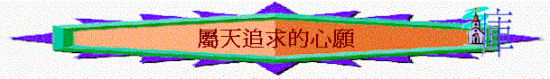

A.屬天追求的心願(1:9-14)
引言：
今日世人多追求什麼事情？人以為追求什麼事才得著智慧？當時歌羅西流行智慧學派的學說，人喜愛追求哲學與地上的智慧，不信古時的神話和先前敬拜的神，看智慧比信仰更重要，更有異端認為追求他們的智慧，人就能「完全」。
〜保羅指出在基督�堙A可以找到一切智慧知識，人不應追求地上的事，應追求屬天的事，究竟屬天的事是什麼？得著有什麼益處？
一．追求方向
1.保羅在1:9中期望信徒得著什麼？ 英文如何譯神的旨意？ 代表什麼？
2.你多不多有為自己或為肢體有此祈求？
二．得著途徑
1:9
是否用人的哲學思想可明白？ 是用什麼明白？ 又是否簡單知到就可以？ 何以見得？
三．達致目的
1.試仔細分析1:10-11，當人真是追求屬天的旨意，更深認識神的心意或追求神的話，可達致什麼結果
關乎對主：
關乎對己：
2.何謂對得起主？ 英文怎譯？ 人若認識神的心意，知道祂看為有價值的事情，並跟隨去行，他會怎樣／神會對他有什麼評價？
3.今天人喜歡討悅誰？ 你若要重新做一個凡事蒙他喜悅的人，你會做／不做什麼事情？
4.另外，果子是指什麼？與明白神心意後有什麼關係？
5.當人行神的心意，更經歷神的同在，他可以更深認識什麼？
6.神會否幫助人行神的心意？ 神給人的力量至終使人可以有什麼表現？
7.有沒有經歷過神的加力，使你可以有感恩與忍耐的表現？
四．信仰超越
1.1:12-14──信徒追求屬天的事，又可得著什麼（是世界的知識及學問及宗教不能給你的）？
2.1:12-14題及要得著以上事情，要在誰裡可得到？
∼今日你最想追求1:10-14中那樣事情？為什麼？
而在「愛子」�奡N可以得著！下一次查經更詳細說明子的地位、身份、祂所作成的事更勝過地上任何人物及天上的受造物，值得我們一生持定及緊靠的。